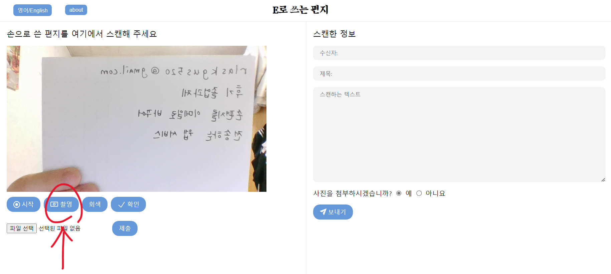
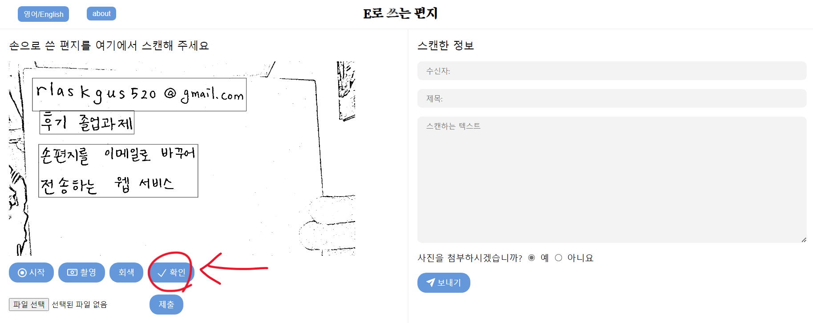
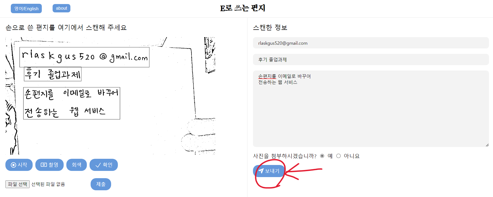

How to use Letter written by E
Thank you for useing our service!
This page shows how to use "Letter written by E"!
1. Capture your handwritten letter!
Place your letter in front of the camera, and click the "Capture" button!
*Caution: If the letter is tilted, tranformation might not work properly! Please capture the image horizontally!
Transformation might take a few seconds. Please wait until the captured image appears!

2. Check the captured image!
When the captured image appears as the picture under, check whether all texts are detected well! If it was, click the "OK" button!

If it wasn't, you can capture your letter again by clicking "Start"!
3. Send your email!
When you click "OK", transformed text will appear at right email form in few seconds.
If there are typos, please edit them!
If you want to attach the letter picture, press "yes" to the question!
Lastly, click "Send"!!

Finally, your email has sented! Thank you for using "Letter written by E"!!